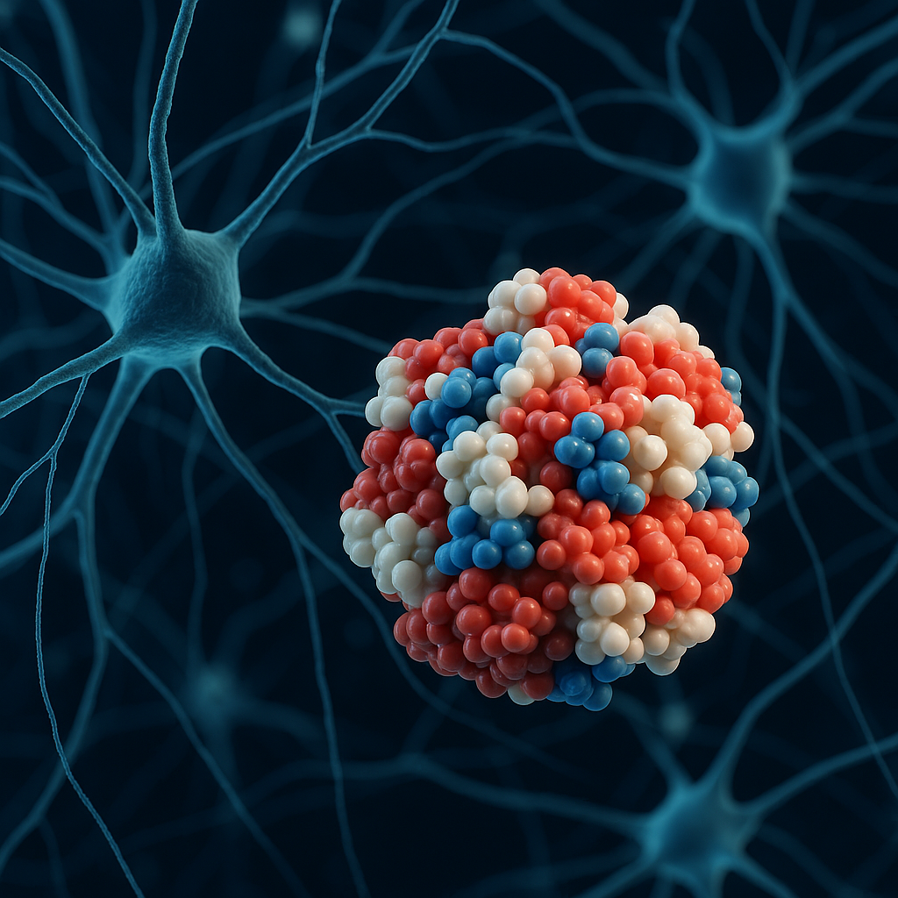

Introduction to Abnormal Protein Aggregation and its Role in Alzheimer’s Research
Published: August 10, 2024
Background
Ever since two scientists noticed dark blots in the brain matter of patients with dementia and similar illnesses in 1892, something known as the amyloid cascade hypothesis has made itself known throughout the scientific community. Although bearing an intimidating name, the hypothesis is relatively straightforward. Before the 1900s, those dark blots were already correctly identified as plaques of unwanted material that tangled around neurons. Later, Alois Alzheimer, the namesake of the neurodegenerative disease, made the hypothesis that these plaques were a possible cause of dementia. Soon, in the latter half of the 1900s, those proteins were identified. The main protein that composed of the tangle was discovered to be Amyloid-ß (Aß). Aß was found to cluster up in the brain quickly and mess with brain functions (Lowe, 2022).
Beta-Amyloids
Let’s break down the idea of an amyloid. In this introduction, it is assumed that the reader is, at least, vaguely familar with the monomer structure of proteins i.e amino acids and the structures of primary, secondary, tertiary, and quaternary folding. Amyloid protein generally refers to a protein that is able to aggregate itself easily and build up quickly. Usually, ß-pleated sheets are found throughout the aggregation in “ultrastructures”, and the parallel structure contributed to the fibrous nature of that structure (Liu, 2011) (Note that antiparallel sheets were not detected (Holcombe, 2023)).These aggregations also tend to contain nucleic acids, with a possible explanation being that nucleic acids tend to be attracted there. As a result, nucleic acids exacerbate and complicate the aggregation, making it even bigger (Liu, 2011).
The most relevant amyloid protein in this paper is Amyloid-beta. Aß proteins usually come from a bigger protein being broken down. That protein is called an Amyloid Precursor Protein (APP), which sits in the cell membrane. APP is usually metabolized by the brain to perform regular functions, but it can be broken down into harmful plaque material. When beta-secretase (ß-secretase), an enzyme, it cuts the APP into two parts. Then gamma-secretase (ɣ-secretase), another enzyme, cuts through the part of the APP that is still attached to the membrane of the cell. That cut creates two more additional pieces: one attached to the membrane still and another that is now free floating. That free floating piece is Aß. These pieces are insoluble and have affinity for each other, meaning that they build up quickly. They can form small, big, and fibrous clumps that are called an oligomer, protofibrils, and amyloid fibrils. (Chen, 2017). With a constant buildup, it should be evident that a problem can be created, and that problem is widely believed to be illnesses like Alzheimer’s.
As a result, a lot of research and work has been dedicated to working towards a cure, and usually these treatments revolved around Aß. Attempts at inhibiting ß-secretase and ɣ-secretase have been carried out, as well as antibodies being tested to get the immune system to combat these plaques (Lowe, 2022). However, none of these treatments have worked, and no significant differences have been found between the experimental and control group. In one study, the treatment actually accelerated symptoms (Lowe, 2022). As a result, doubt has been cast on this theory, in addition to several problems with the integrity of the theory, which will be explained later.
Tau Proteins
Another relevant player in Alzheimer’s disease are tau proteins (τ). Tau proteins are proteins that assist in the stabilization of microtubules. These proteins are usually found in the brain, as those microtubules are critical for neural communications. Tau has a relatively simple structure, with the structure even being described as “natively unfolded” (Gholami 2023). Tau proteins can be messed up in several ways, with one way being affected by prions and another by excessive phosphorylation, which means that there are too many phosphate groups added. As a result of misfolding or damage, Tau proteins can easily begin self-aggregating in a similar fashion as Aß. These abnormal proteins are generally known as p-tau (Gholami 2023). These clumps can also be especially dangerous because they clump and damage the microtubules which are needed for neural connections, and thats why they are also seen as a contributing factor to neurodegenerative diseases such as Alzheimer’s.
Issues
There are some issues that have been raised about the amyloid cascade hypothesis, as well as the idea of plaques being the root cause of dementia and other related illnesses.
Firstly, the sheer number of failed trials showed cracks in the theory, writ large. Amyloid plaques, although a rather intuitive explanation in hindsight, seemed not to be the underlying cause of Alzheimer’s. Rather than focusing on these plaques as the basis of all treatment, it is now more understood that Alzheimers is an extremely complex disease with many potential physiological contributing factors.
This section explains how abnormal protein aggregation is studied, why it’s important in Alzheimer’s research, and the current challenges in therapeutic approaches...
However, a more sinister problem was identified in 2022.
In a 2006 paper by Sylvian Lesné and others, the amyloid Aß-56 was isolated and tested. When tested on rats, Aß-56 seemed to directly cause memory defects in the animals. This paper was seen as groundbreaking and conclusive, but there were some issues with the academic integrity and process of these studies despite passing peer review. Specifically, high amounts of image doctoring and manipulation were later found, as well as straight up generation of non-existing things. For example, protein bands were found to be manipulated and moved. The issue becomes apparent when this paper has been cited over 2000 times (Lowe, 2021). If the findings are sound despite invalid processes, however, other research should corroborate the claims about Aß-56. However, multiple studies and experiments have failed to find Aß-56.
However, it is important to stress that even though Lesné’s paper was most likely indeed a fraud in many areas, the research of the role that plaques and tau buildup play in Alzheimer’s is not irrelevant.
Works Cited
Chen, Guofang, et. al. “Amyloid beta: structure, biology and structure-based therapeutic development.” Acta Pharmacol Sinica, Vol. 38, 2017, pp. 1205-1235, Nature, https://doi.org/10.1038/aps.2017.28.
Gholami, Amirreza. “Alzheimer's disease: The role of proteins in formation, mechanisms, and new therapeutic approaches”. Neuroscience Letters, Vol. 817, 2023, ScienceDirect, https://doi.org/10.1016/j.neulet.2023.137532.
Holcombe, Brooke, et. al. “Intermediate antiparallel beta structure in amyloid plaques revealed by infrared spectroscopic imaging.” bioRxiv [Preprint], Version 1, 2023, NCBI, https://www.ncbi.nlm.nih.gov/pmc/articles/PMC10153194/.
Liu, Changeling, and Yong, Zhang. “Nucleic acid-mediated protein aggregation and assembly.” Advances in Protein Chemistry and Structural Biology, Vol. 84, 2011, pp. 1-40. ScienceDirect, https://www.sciencedirect.com/science/article/pii/B9780123864833000057.
Lowe, David. “Faked Beta-Amyloid Data. What Does It Mean? Science.org, 25 July 2022, www.science.org/content/blog-post/faked-beta-amyloid-data-what-does-it-mean.